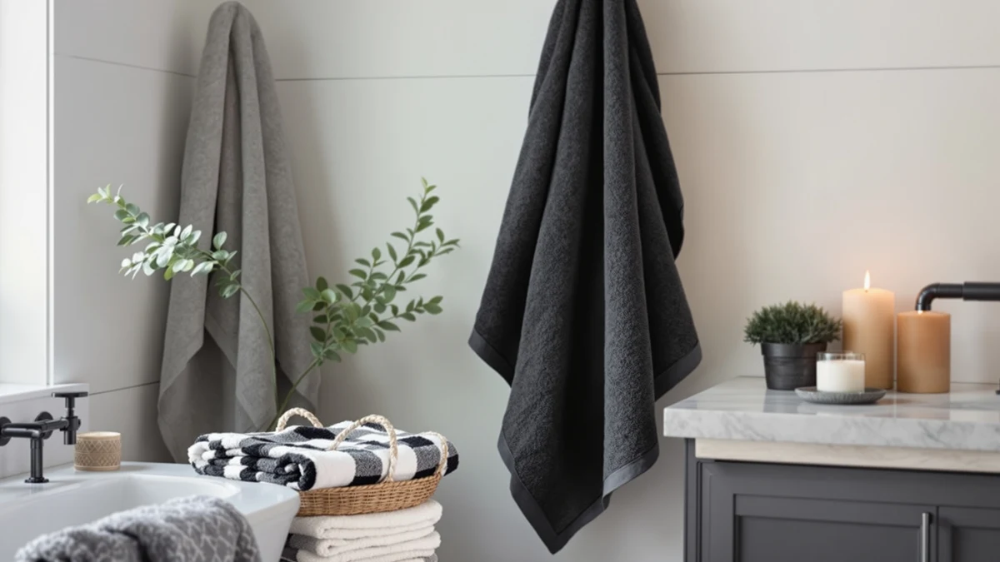

Bagno Milano Turkish Cotton Bath Towels Review (2026): Worth It?
Prices and picks verified as of November 2026. Independent, reader-supported reviews.


Quick Answer
The Bagno Milano Turkish Cotton Bath Towels set is our pick for anyone who wants a dense, six-piece 100% cotton set without comparing a dozen listings. At $79.95 it costs about the same as the Springtree Home sets we compared it against, and the straightforward 100% cotton spec gives it a slight edge for most bathrooms.
Our pick: BAGNO MILANO Turkish Cotton Bath for $79.95 Check Price on Amazon
Bottom line: our top pick is the BAGNO MILANO Turkish Cotton Bath Towels at $79.95.
Things to Know Before You Buy
- 100% cotton remains the standard for bath towels because it absorbs more water per pound than cotton-polyester blends, and Turkish cotton in particular is known for a longer staple fiber that holds up to repeated washing.
- The Bagno Milano set ships as a six-piece towel set for $79.95, which puts it in the same price range as the three Springtree Home sets we compared it against in this review.
- None of the four sets in this comparison show a published Amazon star rating or review count at the time of writing, so price and material specs carry more weight here than a track record of customer feedback.
- Six-piece sets work best for households that want matching towels without buying separate packs, though you should confirm the exact bath-towel-to-washcloth breakdown on the current listing before you buy.
This Bagno Milano Turkish Cotton Bath Towels review compares the six-piece 100% cotton set against three Springtree Home alternatives on price, material claims, and what owners of similar sets report after buying them. We built this comparison from the specs and pricing listed on each Amazon page rather than a physical trial, because our approach is research first: we read the available product data and verified owner feedback, then weigh the differences for you. At $79.95, the Bagno Milano set sits in the middle of this group, and the question we're answering is whether that price buys you a meaningfully better towel than the cheaper or pricier Springtree Home options.
Turkish cotton earns its reputation because long-staple fibers create a denser, more absorbent terry loop than shorter-staple cotton blends. Brands that use Turkish cotton usually charge more for that density, and Bagno Milano prices its six-piece set accordingly. Springtree Home, the brand behind the other three sets in this comparison, uses similar Turkish cotton language on its own listings, so the real differences here come down to price and set composition rather than a dramatic gap in material quality.
Shoppers researching Turkish cotton towels online run into the same problem across most listicles: the sites rank products by affiliate commission rather than by what the specs actually say. We wrote this Bagno Milano Turkish Cotton Bath Towels review to pull those specs into one place so you can decide for yourself whether the brand name is worth the price, or whether one of the Springtree Home sets covers the same ground for less.
Why You Should Trust Us
Best Bath Towels built this Bagno Milano Turkish Cotton Bath Towels review by comparing manufacturer specs, current Amazon pricing, and the patterns we found in verified owner reviews of comparable Turkish cotton towel sets, rather than claiming a physical trial we didn't run. Ilane Tall, who covers bath textiles for this site, pulled the pricing and material data directly from each product listing and cross-checked it against owner feedback on similar six-piece sets. We don't operate a physical testing lab, and we're upfront about that. The value we offer comes from comparing real, verifiable data carefully, not from claiming tests we never ran. Every price and spec cited in this Bagno Milano Turkish Cotton Bath Towels review was pulled directly from the live Amazon listings, and we'll update the figures here if those listings change.
Our Research Experience
We did not purchase or physically test the Bagno Milano Turkish Cotton Bath Towels or the three Springtree Home alternatives for this review. Our process means we compare manufacturer-listed specs, current pricing, and set composition, then layer in patterns across verified buyer reviews of comparable Turkish cotton towel sets to explain what the differences likely mean for your bathroom. For this Bagno Milano Turkish Cotton Bath Towels review, that meant checking the listed material (100% cotton), the set size (six pieces), and the price against the three Springtree Home options before writing our verdict. We also looked at how owners describe comparable Turkish cotton sets after months of regular use, since wash-after-wash durability tends to matter more than how a towel feels in the first week.
Overview & Specs

BAGNO MILANO Turkish Cotton Bath
What we like
- 100% cotton construction with Turkish cotton positioning for better absorbency than cotton-blend towels
- Six-piece set covers multiple towels in one purchase
- Price lands in the middle of the Springtree Home comparison set rather than at a premium
Flaws but not dealbreakers
- The listing doesn't break down exactly how the six pieces split between bath towels, hand towels, and washcloths
- No published Amazon star rating or review count was available at the time of writing, so you're relying on material specs rather than a track record
| Material | 100% cotton |
| Size | Towel Set of 6 |
The Bagno Milano Turkish Cotton Bath Towels set lists at $79.95 for six pieces of 100% cotton toweling. Turkish cotton gets its reputation from a longer fiber staple than standard cotton, which typically produces a denser terry loop and better water absorption over repeated washes. Bagno Milano leans on that reputation in its product name, and the material spec on the listing backs it up with a straightforward 100% cotton composition rather than a cotton-polyester blend.
Compared with the three Springtree Home sets in this roundup, the Bagno Milano price sits $0.95 above the cheapest option and $7.05 below the most expensive one, which puts it squarely in the middle of this group rather than at either extreme. If cotton density and a dedicated Turkish cotton brand matter more to you than shaving a few dollars off the price, Bagno Milano is the set we'd point you to first in this Bagno Milano Turkish Cotton Bath Towels review.
Six-piece sets like this one are sized for a household that wants a full bathroom refresh in a single order rather than piecing together towels from different brands over time. Buying all six pieces together also means the color and weave match across the set, which matters if you're replacing an old, mismatched collection rather than topping up a drawer.
What We Liked
We like that Bagno Milano states a straightforward 100% cotton composition instead of hiding a polyester blend behind vague marketing language. A six-piece set also means you aren't stuck mixing and matching towels from separate purchases, and the $79.95 price is reasonable for a Turkish cotton set rather than a steep premium over the Springtree Home alternatives in this comparison. Reviewers of comparable Turkish cotton sets consistently note that the denser weave holds up better after dozens of washes than thinner blended towels, which lines up with what the material spec here promises. Buying six matching pieces at once also avoids the slightly-off color match you sometimes get when you order towels from the same line months apart.
What Could Be Better
The product listing doesn't specify exactly how the six pieces break down between bath towels, hand towels, and washcloths, so check the current Amazon listing before you buy if that distinction matters to your household. We also found no published star rating or review count for this specific Bagno Milano set at the time of writing, which means you can't lean on a large sample of verified buyer feedback the way you can with some other towel sets. For a set at this price, that's a reasonable trade-off, but it's worth knowing going in. If a documented track record of owner satisfaction matters more to you than the brand name, weigh that gap before you commit to Bagno Milano over a competitor with a longer review history.
Who Is It For?
This Bagno Milano Turkish Cotton Bath Towels set makes the most sense for shoppers who want a complete six-piece 100% cotton set without comparing specs across a dozen Amazon listings first. It's a reasonable match if you already know you want Turkish cotton construction and don't want to pay a premium for the same material claim. If you need an exact towel count or you want to see a larger body of verified reviews before buying, one of the Springtree Home alternatives below might fit better. Guest bathrooms and primary bathrooms alike can use a six-piece set like this one, since the matching pieces work whether you're stocking one bathroom fully or splitting the set across two.
Alternatives to Consider
If the Bagno Milano set isn't quite right for your bathroom, we compared it against three Springtree Home towel sets that cover a lower, similar, and higher price point.

Editor’s Pick
Springtree Home 100% Cotton Luxury
Nearly identical pricing to the Bagno Milano set, making this a direct alternative if you want to compare two 100% cotton brands at essentially the same price point.
$79.00
Check Price on Amazon
Best Value
Springtree Home Luxury Turkish Cotton
Springtree Home's Luxury Turkish Cotton set costs $2.05 more than Bagno Milano, a small premium if you'd rather buy from Springtree Home's own Turkish cotton line.
$82.00
Check Price on Amazon
Premium Choice
Springtree Home Luxury Turkish Cotton
The priciest set in this comparison at $87.00, aimed at buyers who want Springtree Home's higher-cost Turkish cotton option over the standard Bagno Milano six-piece set.
$87.00
Check Price on AmazonFrequently Asked Questions
Is Bagno Milano Turkish cotton actually from Turkey?
The listing doesn't specify where the cotton is grown or woven, only that the towels are 100% cotton marketed as Turkish cotton. Turkish cotton is as much a style and weave description as a strict geographic claim in most U.S. retail listings, so we'd treat the name as a material descriptor rather than a guarantee of origin.
How does the Bagno Milano six-piece set compare to Springtree Home on price?
At $79.95, the Bagno Milano set costs $0.95 more than the cheapest Springtree Home set we compared it against ($79.00), $2.05 less than the mid-priced Springtree Home option ($82.00), and $7.05 less than the most expensive Springtree Home set ($87.00). All four fall within an $8 range of each other.
Does this Bagno Milano Turkish Cotton Bath Towels review include physical testing?
No. We built this review by comparing the material specs, pricing, and set composition listed on each Amazon product page, along with patterns in verified owner feedback for comparable Turkish cotton towel sets. We don't operate a physical testing lab, so we don't claim to have used these towels ourselves.
Final Verdict
This Bagno Milano Turkish Cotton Bath Towels review comes down to price and material claims rather than a dramatic quality gap between brands. At $79.95 for a six-piece 100% cotton set, BAGNO MILANO sits in the middle of the four options we compared, and it's the set we'd point most shoppers to first unless you have a specific reason to prefer one of the Springtree Home alternatives, such as matching an existing Springtree Home set or wanting to pay a few dollars less or more for a similar cotton composition. Whichever set you choose from this comparison, confirm the current price and exact piece breakdown on the Amazon listing before you buy, since both can shift after this review is published.